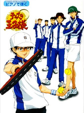
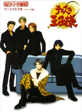
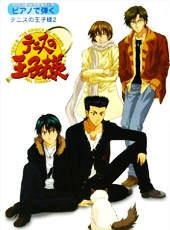
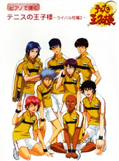
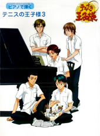

Prince of Tennis Sheet Music Books
With so many themes and character songs, is it surprising that Prince of Tennis several sheet music books available? It’s quite difficult to hunt down information on sheet music for Tenipuri (or any anime, really), so I’ve compiled them here. Clicking any of the book titles will bring you to the Amazon Japan page. Unfortunately, all of the books are out-of-print, so if you want to purchase them, you’ll have to buy them second-hand. (See the caveat under Resources and Links.)
There might be a few errors, especially in the lyricist and composer names, as not all name pronounciations are easily found on Japanese Wikipedia. If CDJapan lists Morikawa Toshiyuki wrong, I’m allowed a little leeway. I haven’t translated the names I’m not sure of.
If you’re considering getting these books, remember that they’re labelled “Piano Solo, Elementary Level”. There are also anime song compliation books that include Tenipuri themes, but these are too diverse for me to list. If you want to find these, check Resources and Links.
On this page
- Piano de Hajiku / Piano Solo Albums
- Resources and Links
Notes
- HIRO-X = Aoki Hiromitsu
- Ikuo = Shibutani Ikuo

Piano de Hajiku: Tennis no Oujisama
All Best of Seigaku Players songs, plus “White Line”, "Make You Free" and BGM tracks.- Music score: 40 pages
- Publisher: Yamaha Music Media
- ISBN-10: 463625533X
- ISBN-13: 978-4636255331
- Release Date: 2002/12/20
| Song | Artist | Composer | Lyricist | |
|---|---|---|---|---|
| 1 | RISING | Echizen Ryoma | Fujita Norihisa | Noguchi Kei |
| 2 | Yokogao | Tezuka Kunimitsu | Fujita Norihisa | Bco |
| 3 | JUMP | Momoshiro Takeshi | UZA | UZA |
| 4 | Chain Reaction | Kaidou Kaoru | UZA | UZA |
| 5 | YOU GET THE POWER | Inui Sadaharu | UZA | UZA |
| 6 | Piece by Piece | Oishi Shuichirou | Fujita Norihisa | T T |
| 7 | Tsubasa ni Natte | Kikumaru Eiji | Fujita Norihisa | kyo |
| 8 | Hitomi wo Tojite, Kokoro no Mama, Boku wa Kimi wo Omou | Fuji Shuusuke | UZA | kyo |
| 9 | Burning Heart | Kawamura Takashi | Fujita Norihisa | KSK |
| 10 | Make You Free | Kimeru / hisoca | Shibutani Ikuo | Makoto |
| 11 | WHITE LINE | Aozu | UZA | UZA |
| 12 | Chousen | — | Watanabe Cher | — |
| 13 | Hanbeki | — | Watanabe Cher | — |
| 14 | Rival | — | Watanabe Cher | — |
| 15 | Honki Mode | — | Watanabe Cher | — |
| 16 | Kutsurogi | — | Watanabe Cher | — |
| 17 | Seishun Gakuen | — | Watanabe Cher | — |

Piano de Hajiku: Tennis no Oujisama ~Rival Kouen~
Rival schools, Fudomine through Rokkaku. All of the songs are from selections from Best of Rival Players except for “Spirit Way” and “CRAFTY”.- Music score
- Publisher: Yamada Music Media
- ISBN-10: 4636259181
- ISBN-13: 978-4636259186
- Release Date: 2004/3/31
| Song | Artist | Composer | Lyricist | |
|---|---|---|---|---|
| 1 | Spirit Way | Atobe Keigo | Mitsumi Sumiyo | Sumiyoshi Ataru |
| 2 | CRAFTY | Oshitari Yuushi | corin | corin |
| 3 | Against Wind | Akutagawa Jirou | Saitou Hideo | Yuzuki Miyu |
| 4 | DA·DA·DA | Mukahi Gakuto | corin | corin |
| 5 | Brandnew Days | Shishido Ryou & Ootori Choutarou | Saitou Hideo | Mitsumi Sumiyo |
| 6 | Victory Road | Tachibana Kippei | Sakashita Masatoshi | Ebata Ikuko |
| 7 | PERFECT GAME | Kamio Akira | TAKAYOSHI | Hassy |
| 8 | CAN SEE THE LIGHT | Ibu Shinji | Neive | anemone |
| 9 | BLOOD | Fuji Yuuta | Sakashita Masatoshi | Itou Midori |
| 10 | Aoi Honoo | Kisarazu Atsushi & Yanagisawa Shinya | Iwase Satoshi | Ebata Ikuko |
| 11 | Trial of luck | Sengoku Kiyosumi | TAKAYOSHI | T_T |
| 12 | Masshiro na Chikai | Dan Taichi | Neive | Saitou Inko |
| 13 | GET FREE | Akutsu Jin | corin | corin |
| 14 | Honey Bee | Aoi Kentarou | Asada Nao | Yuzuki Miyu |
| 15 | Joy to the world | Kurobane Harukaze & Amane Hikaru | Asada Nao | Yuzuki Miyu |
| 16 | Sunset Way | Saeki Koujirou | Maeda Katsuki | Saitou Inko |

Piano de Hajiku: Tennis no Oujisama 2
Several more opening and ending themes, one BGM, plus a few Seigaku character songs from 2003.- Music score
- Publisher: Yamaha Music Media
- ISBN-10: 4636259173
- ISBN-13: 978-4636259179
- Release Date: 2004/3/31
| Song | Artist | Composer | Lyricist | |
|---|---|---|---|---|
| 1 | NEVER END | Echizen Ryoma | Shibutani Ikuo | Shon |
| 2 | future | HIRO-X | UZA | Aoki Hiromitsu |
| 3 | White Message | Tezuka Kunimitsu | UZA | UZA |
| 4 | ONE | Kikumaru Eiji | Suyama Jun | anemone |
| 5 | Shutter Chance wa Ichido dake! | Fuji Shuusuke | UZA | UZA |
| 6 | FLY HIGH | Matsunaga Toshihiko | R.I.C | Mori Yuriko |
| 7 | SAKURA | Hamaguchi Youmu | Hamaguchi Youmu | Hamaguchi Youmu |
| 8 | Birthday ~Aruki Hajimeta Hi~ | Aozu | UZA | UZA |
| 9 | Don’t Look Back | Aozu | Ishii Yasushi | KSK |
| 10 | Tonde! Mawatte! Mata Raishuu | Cap to Bin | UZA | UZA |
| 11 | Kaze no Tabibito | Fureai | Ishii Yasushi | Ookubo Osamu, Kawano Jun’ichirou |
| 12 | LONG WAY | Ikuo | Shibutani Ikuo | Noguchi Kei |
| 13 | Mirai e Mukatte | — | Watanabe Cher | — |
| 14 | Driving Myself | HIRO-X | Shibutani Ikuo | Hassy |

Piano de Hajiku: Tennis no Oujisama ~Rival Kouen 2~
Best of Rival Players selections from Rikkaidai and Jyosei Shonan, as well as “Wonderful days”, “You got game?” and “KEEP YOUR STYLE”.- Music score: 41 pages
- Publisher: Yamada Music Media
- ISBN-10: 463629498X
- ISBN-13: 978-4636294989
- Release Date: 2006/4/28
| Song | Artist | Composer | Lyricist | |
|---|---|---|---|---|
| 1 | Shinjitsu | Yukimura Seiichi | Yoshino Takao | Kousaka Tomomi |
| 2 | Meisei | Sanada Gen’ichirou | Mizushima Yasutaka | Ihara Hiroshi |
| 3 | Dream to Remember | Yanagi Renji | Nieve | Ueda Tatsuji |
| 4 | Come on! Let’s Go! | Masaharu Niou & Yagyuu Hiroshi | Kishii Shou | Shoko |
| 5 | Akaku Someru Tsuki | Kirihara Akaya | Ueda Masashi | GI-NA |
| 6 | WINDY ROAD | Kuwabara Jackal & Marui Bunta | Takahashi Kazuya | Mori Yuriko |
| 7 | OVER | Kajimoto Takahisa | Satou Akira | Mitsumi Sumiyo |
| 8 | TWO OF US ~Junpaku no Hane~ | Tanaka Youhei & Tanaka Kouhei | Mizukami Hiroki | Mori Yuriko |
| 9 | THE PERFECTION | Shinjou Reiji | takazuya | Mori Yuriko |
| 10 | Wonderful days | Pull Tab to Can | 金谷裕一 | 金谷裕一 |
| 11 | You got game? | Kimeru | Fujita Norihisa | TSUTOMU |
| 12 | KEEP YOUR STYLE | Fujishige Masataka | Horie Akira | TAKAYOSHI |

Piano de Hajiku: Tennis no Oujisama 3
Seigaku regulars, circa 2004–2005. “Fight to the End” and “Ai ga Ippai” are from character albums, the rest are found on character singles.- Music score: 47 pages
- Publisher: Yamada Music Media
- ISBN-10: 4636294998
- ISBN-13: 978-4636294996
- Release Date: 2006/4/28
| Song | Artist | Composer | Lyricist | |
|---|---|---|---|---|
| 1 | FIGHT TO THE END | Echizen Ryoma | Shibutani Ikuo | SAKI SODEYAMA |
| 2 | Dakishimete Shimai sou sa | Tezuka Kunimitsu | UZA | UZA |
| 3 | Right by your side | Fuji Shuusuke | UZA | UZA |
| 4 | SAYONARA | Momoshiro Takeshi | UZA | UZA |
| 5 | DISTANCE | Inui Sadaharu | UZA | Tsuda Kenjirou, UZA |
| 6 | Honto no Kimochi | Oishi Shuichirou | UZA | UZA |
| 7 | Ai ga Ippai | Kikumaru Eiji | Watanabe Cher | anemone |
| 8 | Sekai wa Kawaru | Kaidou Kaoru | UZA | UZA |
| 9 | Asobi ni Ikanai ka? | Kawamura Takashi | UZA | UZA |
| 10 | We Love SEIGAKU – Arigatou wo Komete | SEIGAKU NINE PLAYERS | UZA | UZA |
| 11 | Rock 54!? ~Rock na Hito wo Sagashite Miyou~ | Cap to Bin | UZA | UZA |
| 12 | DEPARTURES | Aozu, Cap to Bin | Saitou Masaya | Ishii Hiroshi |
Resources and Links
English
- Josh’s Anime Sheet Music Collection has a few fan-transcribed Tenipuri songs.
- Tenipuri Music Database. List of all CDs, with track listings and such.
Japanese: Information
- Yamaha Music Media, the publisher. To find things, search.
- Tennis no Oujisama Tome. Lists merchandise: tankoubon, CDs, DVDs, related books, games and calendars. Use Ctrl+F if you value your sanity.
- Tennipri Attraction Site. Official site of the Tenipuri music franchise, run by T.Y. Entertainment (formerly Index Music / Interchannel). Has a full list of every CD ever.
- Otopuri. The official CD shop, opened 2009. Here you can also buy Tezuka’s glasses and everything you need to be to be a Prince of Yakinaku.
Japanese: Stores
If a store doesn’t ship overseas, try a friend (free of charge) or a proxy service (prices vary). A list of some of proxy services can be found at Wings of Yuri. Note that if you’re planning to do a proxy service, do your research! Each service has a different way of operating and a different fee system—some save you a lot of money if you buy over ¥10000 but have a steep flat rate, others have a great flat rate but get steeper as you spend more.
- Amazon.co.jp: Gakufu, Score, Ongaku-sho. Use the search box—browsing is a nightmare. Used books likely won’t ship outside of Japan.
- GakufuNet. Well organized online sheet music store that stocks a few sheet music books containing Tenipuri themes. Does not ship overseas.